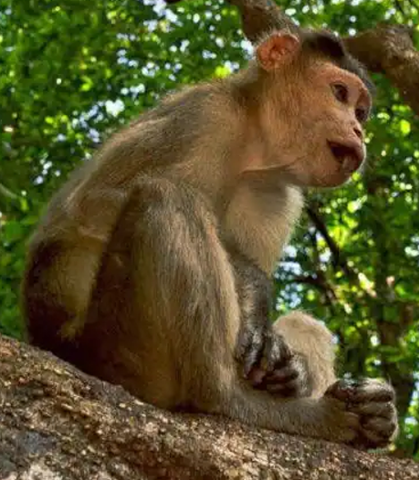

Location : Spread over Satara, Kolhapur and Sangli Districts, Maharashtra
2004
Area : 317.67 km2 Flora : The forest types seen here are a mix of Malabar Coast moist forests and North Western Ghats moist
deciduous forests. In the dwarf evergreen forests, some tree species commonly seen here are the anjani ironwood tree, jamun,
pisa (angustifolia), fig, Olea (diocia), katak spinous kino tree, nana or Crape myrtle (lanceolata), kinjal, kokum tree and
phanasi false kelat (brachiata). Other trees dominating the landscape include asan wood or ain or Indian laurel, amla or Indian
gooseberry, umbar or devil fig (hispida) and harra or chebulic myrobalan.
Fauna : Nearly 23 species of mammals, 122 species of birds, 20 species of amphibians and reptiles are known to
be resident in the forests of Chandoli. Tiger,leopard, Indian bison, leopard cat, sloth bear and giant squirrel, barking deer,
sambar deer, mouse deer and blackbuck.
Features : UNESCO World Heritage Site
Chandoli National Park
Leopard
Mouse deer
Gugamal National Park
Location : Chikhaldara and Dharni tehsils of Amravati, Maharashtra
Established in : 1974
Area : 1673.93 km2 Flora : The forest in rugged and hilly area of Melghat is typical southern dry deciduous forest. It consists
mainly of teak, ain, tiwas, Indian gooseberry, lendia, dhawada, and kusum trees. Bamboo is widespread in the forests. Some
orchids and strobilanthes are present in the upper hills. The area is rich in medicinal plants.
Fauna : The area is rich in wild mammals including the Bengal tiger, Indian leopard, sloth bear, Ussuri dhole,
Indian jackal, striped hyena, four-horned antelope, sambar, gaur, barking deer, ratel, flying squirrel, cheetal, nilgai, wild
boar, langur, rhesus monkeys, and macaques. Also found here are 25 types of fishes and many varieties of butterflies.
Features : Part of Melghat Tiger Reserve
Gugamal National Park
Flying squirrel
Rhesus macaque
Navegaon National Park
Location : In the Arjuni Tehsil of Gondia district, Maharashtra
Established in : 1975
Area : 133.88 km2 Flora : Diverse vegetation type ranging from dry mixed forests to moist forests. Its forests belong to the
category of Southern Tropical Dry Deciduous Forests. This sanctuary serves as a living repository of various economical,
medicinal, aromatic, ornamental plant species. It includes, Teak, Haldu, Jamun, Kawat, Mahua, Ain, Bhel and Bhor.
Fauna : The vertebrate fauna includes, besides a number of fishes, 209 species of birds, 9 species of reptiles
and 26 species of mammals which includes Tiger, Panther, Jungle cat, Small India Civet, Palm Civet, Wolf, Jackals, Bisons,
Sambars, Nilgais, Chitals, Wild boars, Sloth Bears, and Nathan Lewis in this national park.
Navegaon National Park
Panther
Sloth bear
Sanjay Gandhi National Park
Location : Mumbai, Maharashtra
Established in : 1996
Area : 87 km2 Flora : Kadamba, teak, karanj, shisham, and species of acacia, ziziphus, euphorbia, flame of the forest, red
silk cotton and a number of other varieties of flowers. Karvi or karvy, a flowering plant that blossoms once in eight years,
can be found in the park.
Fauna : Chital (or spotted deer), rhesus macaque and bonnet macaque are some of the wild mammals often spotted
inside the park. Other large mammals found in the park include black-naped or Indian hare, muntjac (barking deer), porcupine,
Asian palm civet, chevrotain (mouse deer), Hanuman or grey langur, Indian flying fox, sambar deer and leopard.
Reptiles living here include crocodiles in the Tulsi Lake, pythons, cobras, monitor lizards, Russell's vipers, bamboo pit viper
and Ceylonese cat snakes.
Some of the birds found in the park are jungle owlets, golden orioles, racket-tailed drongos, minivets, magpies, robins,
hornbills, bulbuls, sunbirds, peacock, and woodpeckers.
A total 172 species of butterflies have been reported here, of which the spectacular ones are blue Mormon, blue oak leaf,
bright Jezebel and large yellow and white orange tip, tiger butterfly, eggflies and sailers. There are a number of moths also.
Features : The 2400-year-old Kanheri caves sculpted out of the rocky cliffs lie within the park.
Sanjay Gandhi National Park
Blue mormon
Python

Langur
Tadoba National Park
Location : Chandrapur district of Maharashtra
Established in : 1955
Area : 625.4 k2 Flora : Predominantly southern tropical dry deciduous forest with dense woodlands comprising about eighty
seven per cent of the protected area. Teak is the predominant tree species. Other deciduous trees found in this area include
ain (crocodile bark), bija, dhauda, hald, salai, semal and tendu. Beheda, hirda, karaya gum, mahua madhuca (crepe
myrtle), palas (flame-of-the-forest, Butea monosperma) and Lannea coromandelica (wodier tree). Axlewood
(Anogeissus latifolia, a fire-resistant species), black plum and arjun are some of the other tropical trees that
grow in this reserve.
Fauna : Bengal tiger, Indian leopards, sloth bears, gaur, nilgai, dhole, striped hyena, small Indian
civet, jungle cats, sambar, barking deer, chital, chausingha and honey badger. Reptiles here include marsh crocodile, the
endangered Indian python and the common Indian monitor. Terrapins, Indian star tortoise, Indian cobra and Russel's viper. The
grey-headed fish eagle, the crested serpent eagle, and the changeable hawk-eagle are some of the raptors seen in the park.
Other bird species found in the reserve include the orange-headed thrush, Indian pitta, crested treeswift, stone curlew,
crested honey buzzard, paradise flycatcher, bronze-winged jacana, lesser goldenbacked woodpecker, various warblers, black-naped
blue flycatcher and the Indian peafowl.74 species of butterflies have been recorded including pansies, monarchs, mormons and
swordtails. Insect species include the endangered danaid egg-fly, great eggfly, dragonflies, stick insects, jewel beetles
and the praying mantis
Features : It is Maharashtra's oldest and largest national park.